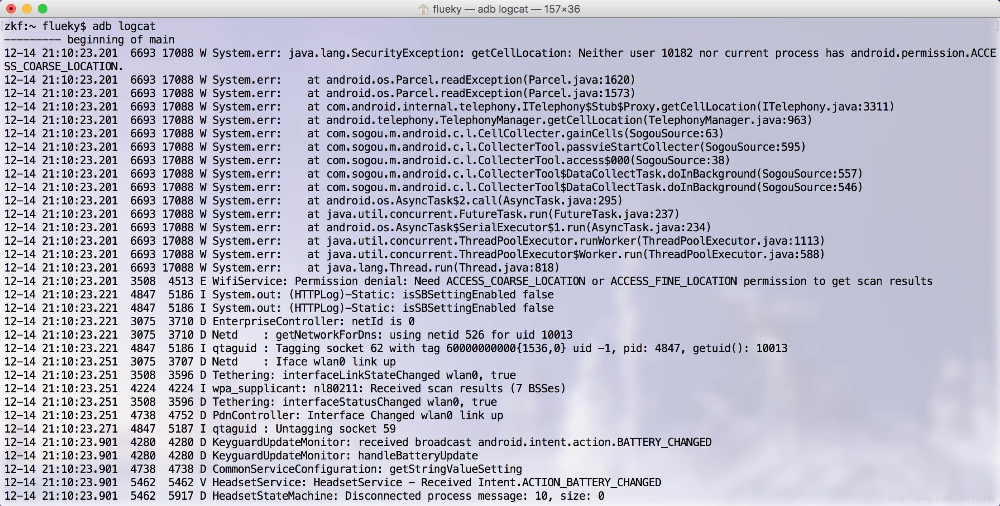
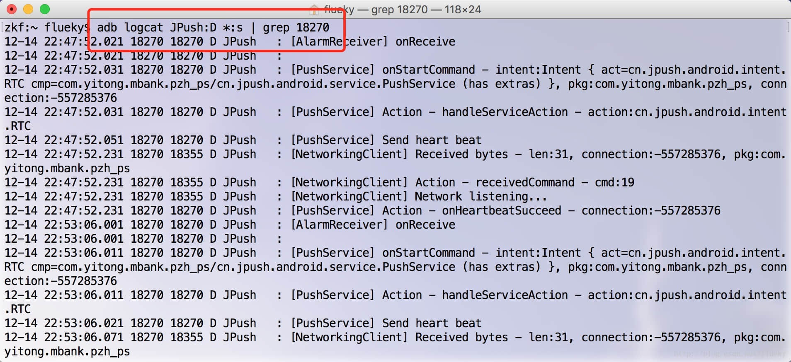
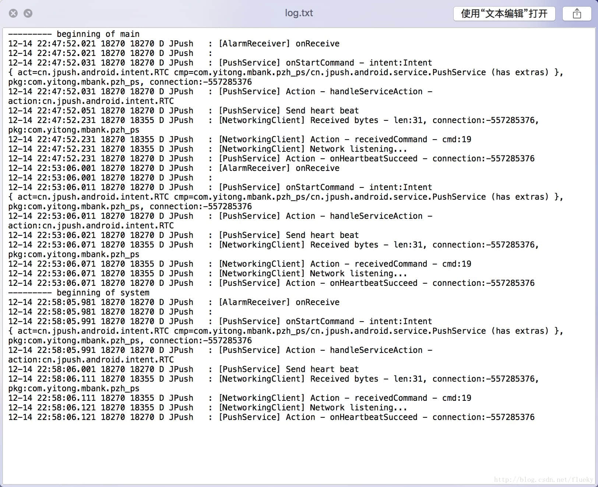

写这篇博客的灵感，来自于最近工作的刺激。手上有好几个项目不定期出现问题，而自己又去不了开发现场看日志分析问题、做debug操作。
目前比较流行的两种查看日志的方式有：
- 开发者通过在开发工具的logcat窗口查看日志输出。优点：具备日志筛选功能，能够比较容易的找到关键信息。缺点：需要装备整套的安卓开发环境。
- 在程序中添加保存日志到文件的功能。优点：能够捕获到更完整详细的日志。缺点：保存的日志太多，几百上千行，看起来太累。
1 准备工作
需要具备基础的计算机技能、Java开发环境和 Android sdk。
1.1 下载Android SDK
[请跳转](/blog/2019-01-23/#1.1-下载-sdk)
1.2 配置环境变量
[请跳转](/blog/2019-01-23/#1.2-配置环境变量)
1.3 打开手机开发者模式
[请跳转](/blog/2019-01-24/#3-打开开发者模式)
2 相关命令
做好一切，就可以将手机连接到电脑调试。个人觉得，Windows系统有个比较恶心的问题就是usb的驱动。如果在使用中，同样遇到这个问题，建议使用豌豆荚等PC端的手机管理软件。他们会只能匹配usb驱动，类似于驱动精灵。打开开发者模式的方式，也做了相应的引导。
- 启动adb服务：
adb start-server - 查看连接设备：
adb devices - 停止adb服务：
adb kill-server
注：这里停止adb服务命令只做演示用途，查看日志时，在检查手机成功连接上电脑之后，不能停止adb服务。
3 查看日志
使用adb logcat命令，执行后如下：
这输出的日志也是一大坨，而且还不停的输出，看上去眼花缭乱。主要是因为没做筛选。
以上输出的信息包含了：日期、时间、PID、TID、日志级别、标签、日志内容。
PID:可以看成app运行时，在系统中的唯一的一个标识。
UID:PID可以对应多个TID，主要是由于支持多线程。每个线程对应一个TID。
日志级别：Android Log类源码中，日志有6个级别。常用的5个分别是 V（Verbose 明细，最低级别）、D（Debug 调试）、I（Info 信息）、W（Warn 警告）、E（Error 错误）。
标签：开发中，标记日志的一个属性。如，使用类名，表示是哪个类里输出的日志。
4 筛选日志
可以根据PID（同一时刻包名和PID是一一对应关系）、TID、日志级别、日志标签、日志内容做筛选。考虑到篇幅关系暂且只介绍使用PID、日志级别、标签筛选日志。
4.1 根据日志级别筛选
命令模板：adb logcat 标签：日志级别 （*：s）。
筛选Warn级别以上的日志（包含Error）命令：adb logcat *:W 表示不匹配标签。
4.2 根据标签筛选
筛选System的日志命令：adb logcat System:* *:s第一个星号表示不匹配日志级别， *:S用于设置所有标记的日志优先级为S，这样可以确保仅输出符合条件的日志。
4.3 根据PID（应用包名）筛选
由于应用每次启动后，系统分配的PID都不一样。因此，需要根据包名或UID筛选日志时，需要先启动应用，再使用命令adb shell dumpsys meminfo 包名 查看到UID信息，最后根据PID筛选日志。
根据PID 18270（图中所示）筛选日志 ，命令adb logcat | grep 18270:
图中可以看出，PID 18270 是唯一的，右边的TID可以有多个值。横向匹配的18270 是没有添加
*:s导致的。
4.4 综合筛选
5 保存日志
5.1 保存到手机
命令模板：adb logcat -f 手机上文件目录 标签:日志级别 *:s | grep PID
如：adb logcat -f /sdcard/Download/log.txt JPush:D *:s | grep 18270
5.2 保存到电脑
命令模板：adb logcat > 电脑上文件目录 标签:日志级别 *:s | grep PID
如：adb logcat > ~/Desktop/log.txt JPush:D *:s | grep 18270
保存的文件内容如下：
觉得有用？那打赏一个呗。[去打赏](/donate/)